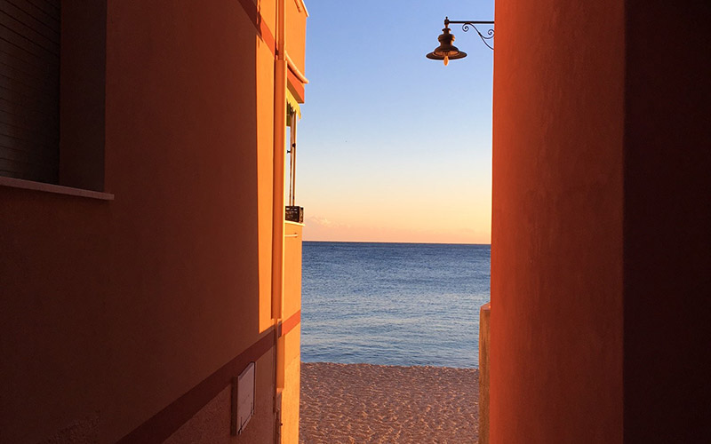
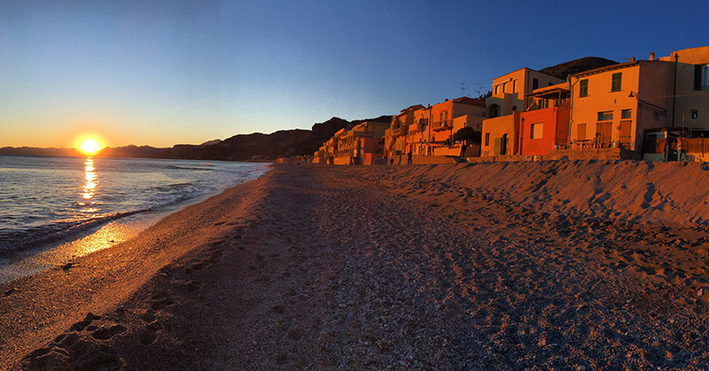
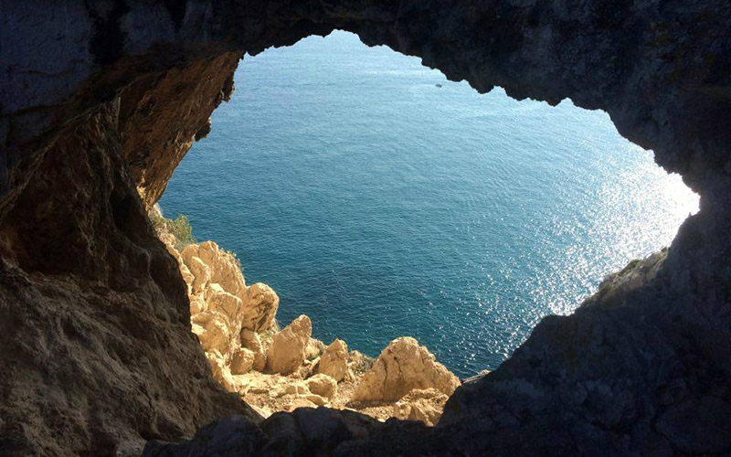
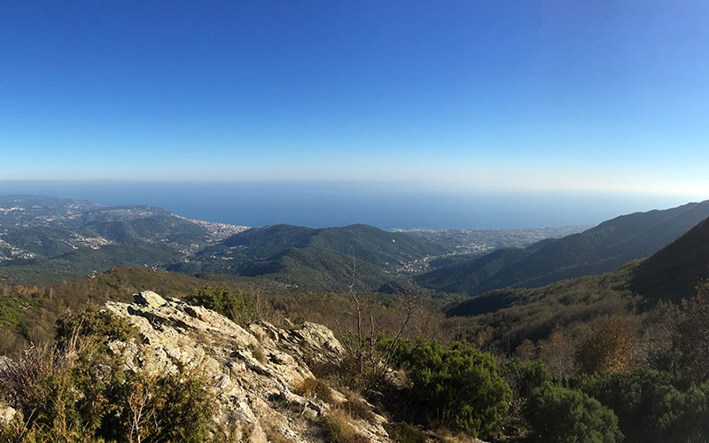

<!DOCTYPE html>
<html>
  <head>
    <meta name="viewport" content="width=device-width, initial-scale=1.0">
    <meta charset="utf-8">
    <title>Villa Paradiso</title>
    <link href="../assets/css/normalize-min.css" rel="stylesheet">
    <link href="../assets/css/styles.css" rel="stylesheet">
    <link href="https://fonts.googleapis.com/css?family=Josefin+Slab|Open+Sans|Pinyon+Script" rel="stylesheet">
  </head>
</html>
<div class="header"><a class="logo" href="index.html">
    <h1>Villa Paradiso</h1></a>
  <div class="hamburger-icon">
    <div class="bar"></div>
    <div class="bar"></div>
    <div class="bar"></div>
  </div>
  <ul class="main-nav">
    <li><a href="/fr/rooms.html">BED AND BREAKFAST</a></li>
    <li> <a href="/fr/surroundings.html">LES ENVIRONS</a></li>
    <li> <a href="/fr/garden.html">LE JARDIN</a></li>
    <li> <a href="/fr/prices.html">TARIFS</a></li>
    <li> <a href="/fr/contact.html">CONTACT</a></li>
  </ul>
  <ul class="language-picker"><a href="/de/">
      <li></li></a><a href="/fr/">
      <li></li></a><a href="/en/">
      <li> </li></a><a href="/">
      <li></li></a></ul>
</div>
<div class="header-white-fill"></div>
<div class="page-wrapper pages-wrapper">
  <section class="pages-hero-wrapper">
    <div class="page-section-text pages-hero">
      <h2>Autours de la Villa</h2>
      <p>La Villa Paradiso est un excellent point de départ quel que soit vos intérêts. </p>
    </div>
  </section>
  <aside class="surroundings-aside">
    <h2>Quick Page links</h2>
    <ul>
      <li><a class="smoothscrolllink" href="#">La mer</a></li>
      <li><a class="smoothscrolllink" href="#">Cycling</a></li>
      <li><a class="smoothscrolllink" href="#">Climbing/Hiking</a></li>
      <li><a class="smoothscrolllink" href="#">Verezzi</a></li>
      <li><a class="smoothscrolllink" href="#">Final Borgo</a></li>
      <li><a class="smoothscrolllink" href="#">Pellegrino Trail</a></li>
      <h2>Useful Local links</h2>
      <ul>
        <li><a href="http://societa.verezzi.it/" target="_blank">Antica Societa Pizzeria</a></li>
        <li><a href="http://www.festivalverezzi.it/" target="_blank">Festival Teatrale di Borgio Verezzi</a></li>
        <li><a href="http://www.grottediborgio.it/" target="_blank">Grotte di Borgio Verezzi </a></li>
        <li><a href="http://www.comuneborgioverezzi.gov.it/" target="_blank">Comune di Borgio Verezzi</a></li>
        <li><a href="http://turismo.comunefinaleligure.it/en/outdoor" target="_blank">Outdoor Activities in Finale</a></li>
        <li><a href="http://borgioverezzisentieri.altervista.org/" target="_blank">Borgio Verezzi Information</a></li>
      </ul>
    </ul>
  </aside>
  <div class="surroundings-wrapper">
    <section id="sea">
      <h2>The Surroundings</h2>
      <p>The beach, swimming and diving or boat trips pursuing the routes of dolphins and whales in the cetacean sanctuary. We can recommend the best places to swim and sunbathe, free beaches as well as private equipped with sun loungers and also animal friendly spots! </p>
    </section>
    <section id="verezzi">
      <p>In just fifteen minutes on foot, you can enjoy a gentle stroll up to the ancient village of Verezzi with its romantic atmosphere and the prestigious summer theatre Festival or you can discover important historical centers such as Genoa, an hour drive from Villa Paradiso to the east. To the west dive into the world of the Principality of Monaco or capture the sparkling liveliness of a Mediterranean city like Nice.</p>
    </section>
    <section id="finalborgo">
      <p>Finalborgo protected by medieval walls, with craft workshops, specialised sports shops and characteristic restaurants. The beautiful Varigotti with colourful houses built onto the beach, one of the most famous beaches in Italy together with the nearby Saracens Bay and the Malpasso beach </p>
    </section>
    <section id="pellegrinotrail">
      <p>One of the most beautiful and historic places to visit in the area is the Pellegrino Trail connecting Varigotti and Noli over Caponoli headland with incredible views  extending from the sea to the mountains from Portofino to Capomele, and on clear days the chance to admire Corsica and the Carrara marble quarries.</p>
    </section>
    <section id="climbinghiking">
      <p>Another of the most charming villages in Italy is the ancient maritime republic of Noli, a jewel of the Ponente Riviera with its characteristic porches and ancient towers.</p>
      <p>There are numerous hiking trails that can be reached without having to travel by car: in Borgio Verezzi alone you can explore to following trails: Nature, Culture, Geology, Ancient Rural Routes rich in botanical variety and archaeological finds.</p>
      <p>It is possible to trek along the Napoleonic road, an ancient route linking Borgio Verezzi to Finale Ligure passing the Caprazoppa hill and its promontory.</p>
      <p>Or go with the whole family to discover the most colourful caves of Italy, visiting the natural wonders inside the Grotte of Borgio Verezzi. </p>
    </section>
    <section id="cycling"> 
      <p>Villa Paradiso is just a few kilometers from the nearest motorway exit, the A10 to Finale Ligure which is a popular resort for outdoor sports. It is possible to practice cycling and mountain biking at all levels. Finale Ligure hosts important competitions such as the WEMBO World 24 Hour Mountainbike Championship and the European Solo 24h MTB and the Enduro World Series. You can also find bicycle services and activities such as rental, MTB school, guides and shuttles.</p>
      <p>As well as this, the territory of the Finale is known among climbers all over Europe who love to climb the innumerable rocks that boast some of the most beautiful cliffs in Italy. Finalborgo has hosted for several years the sporting and social volunteer event 'Finale for Nepal'. </p>
      <p>In 2017 from 1st to 5th November, the International Meeting of Speleology - Cave exploration will take place in Finale Ligure. The Ligurian Riviera of Ponente also hosts numerous racing, triathlon, trail, endure and cross races not to mention the Milan-Sanremo, one of the most important cycling races since 1907. </p>
      <p>At Villa Paradiso we know the area and what it has to offer and we will be happy to advise you where to find the most genuine taggiasca olive oil, the wineries that produce the best Pigato, Rossese and Vermentino in the area, where to buy pesto, our famous walnut sauce and local specialties to try; but above all we can recommend the restaurants, taverns and agritourism that we also visit. We are happy to point out the many events, fairs, markets and gourmet festivals that take place throughout the year and we can help you organize your visit so that your vacation can become a memorable experience and you too can fall in love with our wonderful Liguria. </p>
    </section>
  </div>
  <footer class="body-padding-footer">
    <div class="flex-wrapper">
      <div class="footer-group">
        <h4>Choisissez votre langue</h4>
        <ul class="language-picker-footer"><a href="/de/">
            <li></li></a><a href="/fr/">
            <li></li></a><a href="/en/">
            <li> </li></a><a href="/it/">
            <li></li></a></ul>
      </div>
      <div class="footer-group">
        <h4>En savoir plus</h4>
        <ul>
          <li><a href="/en/rooms.html">BED AND BREAKFAST</a></li>
          <li> <a href="/en/surroundings.html">LES ENVIRONS</a></li>
          <li> <a href="/en/garden.html">LE JARDIN</a></li>
          <li> <a href="/en/prices.html">TARIFS</a></li>
          <li> <a href="/en/contact.html">CONTACT</a></li>
        </ul>
      </div>
      <div class="footer-group">
        <h4>Contactez-nous</h4>
        <p>VILLA PARADISO <br> Via N. Sauro, 172 Borgio Verezzi </p>
        <p>Phone: 019 610622</p>
        <p>Email: villaparadiso@verezzi.it</p>
      </div>
    </div>
    <div class="copyright">
      <p>&copy 2018 Tous Droits Réservés</p>
    </div>
  </footer>
  <script src="../assets/js/app.js"></script>
</div>